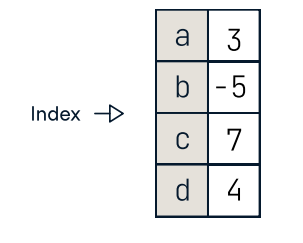
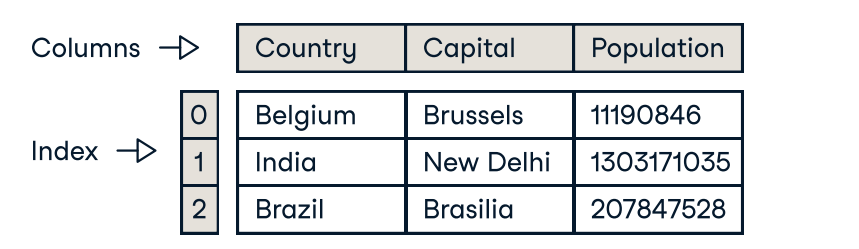
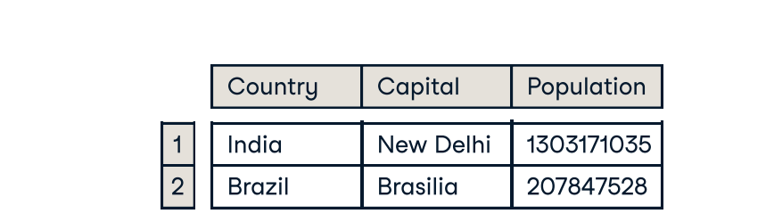

The Pandas library is built on NumPy and provides easy-to-use data structures and data analysis tools for the Python programming language.
>>> import pandas as pd
A one dimensional labeled array capable of holding any data type.
>>> s = pd.Series([3, -5, 7, 4], index=['a', 'b', 'c', 'd'])

A two dimensional labeled data structure with columns of potentially different types.

>>> data = {'Country': ['Belgium', 'India', 'Brazil'],
'Capital': ['Brussels', 'New Delhi', 'Brasília'],
'Population': [11190846, 1303171035, 207847528]}
>>> df = pd.DataFrame(data,
columns=['Country' ,'Capital' , 'Population'])
>>> s.drop(['a' , 'b']) #Drop values from rows (axis=0)
>>> df.drop( , axis=1) #Drop values from columns(axis=1)
>>> help(pd.Series.loc)
>>> df.sort_index() #Sort by labels along an axis.
>>> df.sort_values(by='Country') #Sort by the values along an axis.
>>> df.rank() #Assign ranks to entries.
>>> pd.read_csv( , header=None, nrows=5)
>>> df.to_csv ('myDataFrame.csv')
>>> pd.read_excel('file.xlsx')
>>> df.to_excel('dir/myDataFrame.xlsx' , sheet_name= 'Sheet1')
>>> xlsx = pd.ExcelFile('file.xls')
>>> df = pd.read_excel(xlsx, 'Sheet1')
>>> from sqlalchemy import create_engine
>>> engine = create_engine('sqlite:///:memory:')
>>> pd.read_sql("SELECT * FROM my_table;", engine)
>>> pd.read_sql_table('my_table', engine)
>>> pd.read_sql_query("SELECT * FROM my_table;", engine)
read_sql() is a convenience wrapper around read_sql_table() and read_sql_query()
>>> df.to_sql( , en 'myDf' gine)
>>> s['b'] #Get one element.
-5
>>> df[1:] #Get subset of a DataFrame.

>>> df.iloc[[0],[0]] #Select single value by row & column.
'Belgium'
>>> df.iat([0],[0])
'Belgium'
>>> df.loc[[0], ['Country']] #Select single value by row & column labels.
'Belgium'
>>> df.at([0], ['Country'])
'Belgium'
>>> df.ix[2] #Select single row of subset of rows.
Country Brazil
Capital Brasília
Population 207847528
>>> df.ix[:, 'Country'] #elect a single column of subset of columns.
0 Brussels
1 New Delhi
2 Brasília
>>> df.ix[1, 'Capital'] #Select rows and columns.
'New Delhi'
>>> s[~(s > 1)] #Series s where value is not >1.
>>> s[(s < -1) | (s > 2)] #s where value is <- 1 or >2
>>> df[df['Population']>1200000000] #Use filter to adjust DataFrame.
>>> s['a'] = 'a' 6 #Set index a of Series s to 6.
>>> df.shape #(rows,columns).
>>> df.index #Describe index.
>>> df.columns #Describe DataFrame columns.
>>> df.info() #Info on DataFrame.
>>> df.count() #Number of non-NA values.
>>> df.sum() #Sum of values.
>>> df.cumsum() #Cummulative sum of values.
>>> df.min()/df.max() #Minimum/maximum values.
>>> df.idxmin()/df.idxmax() #Minimum/Maximum index value.
>>> df.describe() #Summary statistics.
>>> df.mean() #Menu of values.
>>> df.median() #Median of values.
>>> f = lambda x: x*2
>>> df.apply(f) #Apply Functions.
>>> df.applymap(f) #Apply function element wise.
>>> s3 = pd.Series([7, -2, 3], index=['a', 'b', 'c'])
>>> s + s3
a 10.0
b NaN
c 5.0
d 7.0
>>> s.add(s3, fill_values=0)
a 10.0
b -5.0
c 5.0
d 7.0
>>> s.sub(s3, fill_value=2)
>>> s.div(s3, fill_value=4)
>>> s.mul(s3, fill_value=3)
© All Copyright 2024 by coding_by_teju